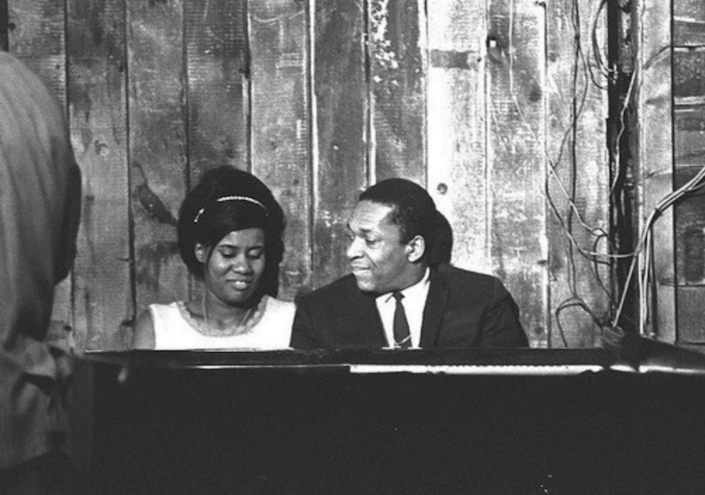
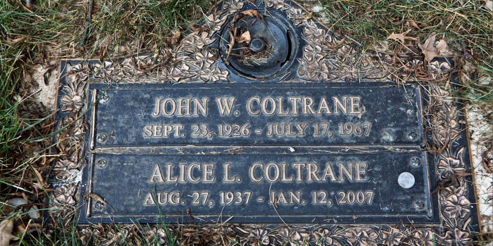

>
>Early Years & Career
(1937–1965)
Alice McLeod was born on August 27, 1937, in Detroit, Michigan, and grew up in a musical household. Her mother was a member of the choir at her church, and her half brother became a jazz bassist. With the motivation of her father, Alice pursued music and started to perform in various clubs around Detroit, until moving to Paris in the late 1950s. She studied classical music, and also jazz with Bud Powell in Paris, where she worked as the intermission pianist at the Blue Note Jazz Club in 1960. It was there that Alice appeared on French television in a performance with Lucky Thompson, Pierre Michelot, and Kenny Clarke.
She married Kenny “Pancho” Hagood in 1960 and had a daughter with him. The marriage ended soon after, on account of Hagood’s developing heroin addiction, and Alice was forced to move back to Detroit with her daughter. She continued playing jazz as a professional in Detroit, with her own trio and as a duo with vibist Terry Pollard.
In 1962–63 she played with Terry Gibbs’ quartet, during which time she met John Coltrane. In 1965 they were married in Juárez, Mexico. John Coltrane became stepfather to Alice’s daughter Michelle, and the couple had three children together: John Jr. (1964–1982, a drummer); Ravi (b. 1965, a saxophonist); and Oranyan (b. 1967, a DJ).
John & Alice seated together.
Solo Work
(1967–1978)
In 1966, Alice Coltrane replaced McCoy Tyner as pianist with John Coltrane's group. She subsequently recorded with John and continued playing with the band until his death on July 17, 1967. Their growing involvement in spirituality influenced some of John's compositions and projects, such as A Love Supreme. After her husband's death, Alice continued to forward the musical and spiritual vision, and started to release records as a composer and bandleader. Her first album, A Monastic Trio, was recorded in 1967. From 1968 to 1977, she released thirteen full-length records. As the years passed, her musical direction moved further from standard jazz into the more cosmic, spiritual world. Her later albums show a progression from a four-piece lineup to a more orchestral approach, with lush string arrangements and cascading harps. Until 1973, she released music with Impulse! Records, the jazz label for which her husband recorded almost all of his later albums. From 1973 to 1978, she released primarily on Warner Bros. Records until she stepped away from the public eye.
Ashram Years
(1975–1995)
After the death of her husband, Coltrane experienced a period of trial. She suffered from severe weight loss and sleepless nights, as well as hallucinations. This tapas (a Sanskrit term she used to describe her suffering), led her to seek spiritual guidance from the guru Swami Satchidananda and later from Sathya Sai Baba. By 1972, she abandoned her secular life, and moved to California, where she established the Vedantic Center in 1975. By the late 1970s she had changed her name to Turiyasangitananda. She was the spiritual director, or swamini, of Shanti Anantam Ashram which the Vedantic Center established in 1983 near Malibu, California. Alice would perform formal and informal devotional Vedic ceremonies at the ashram. She performed solo chants, known as bhajans, and group chants, or kirtans. She developed original melodies from the traditional chants, and started to experiment by including synthesizers and sophisticated song structures.
This culminated in her first spiritual cassette, Turiya Sings, in 1982. The cassette was released only to the members of the ashram, through her publishing company, the Avatar Book Institute. Through the mid 1980s into the mid 1990s, she released three more cassettes, Divine Songs, Infinite Chants, and Glorious Chants. New York-based label Luaka Bop released a compilation of tracks from her ashram tapes as World Spirituality Classics 1: The Ecstatic Music of Alice Coltrane Turiyasangitananda in May 2017.
The ashram was destroyed in the 2018 Woolsey Fire.
Later Years & Death
(1995–2007)
The 1990s saw renewed interest in her work, which led to the release of the compilation Astral Meditations, and in 2004 she released her comeback album Translinear Light. Following a 25-year break from major public performances, she returned to the stage for three U.S. appearances in the fall of 2006, including a concert at Ann Arbor's Hill Auditorium presented by University Musical Society of the University of Michigan on September 23, which would have been John Coltrane's 80th birthday, and culminating on November 4 with a concert for the San Francisco Jazz Festival with her son Ravi, drummer Roy Haynes, and bassist Charlie Haden.
Alice Coltrane died of respiratory failure at West Hills Hospital & Medical Center in suburban Los Angeles in 2007, aged 69. She is buried alongside John Coltrane in Pinelawn Memorial Park, Farmingdale, Suffolk County, New York.
